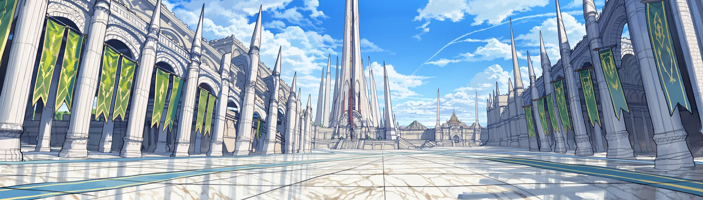
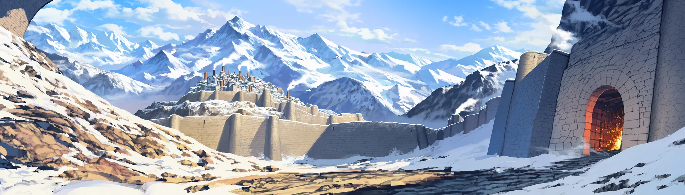
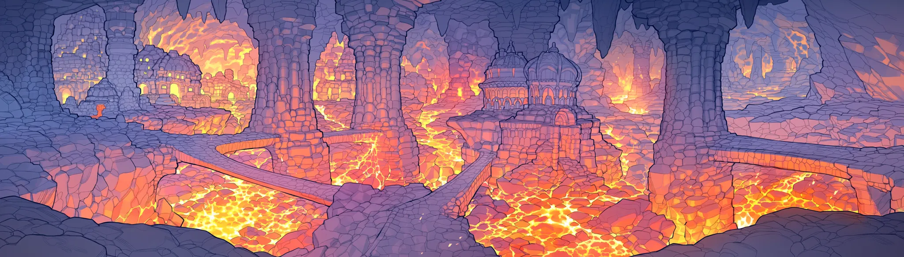
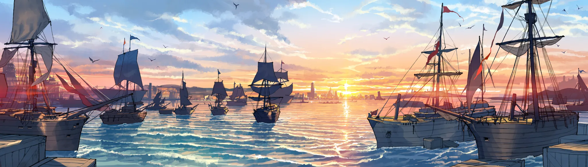
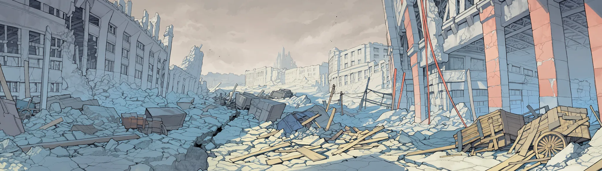
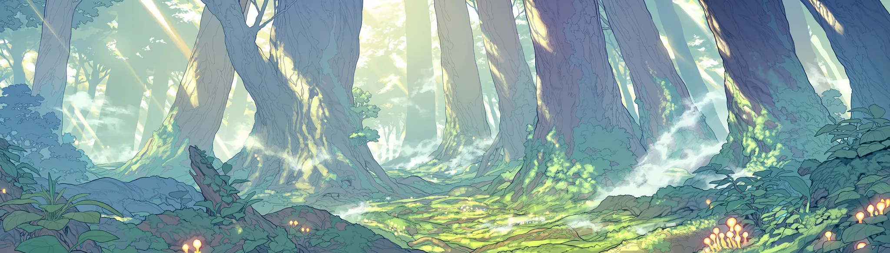
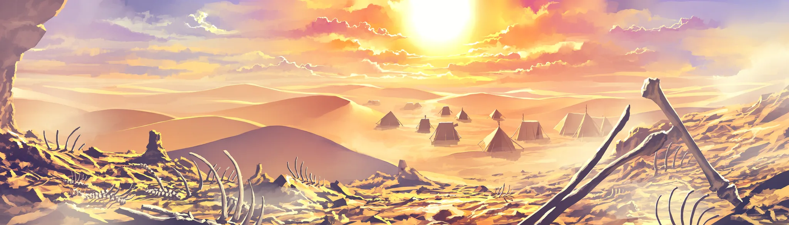
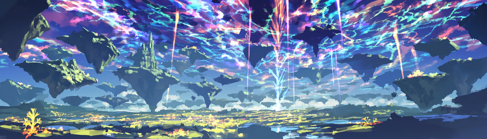

중부 평야 · 시작 권역
리아텔
모든 이방인이 처음 눈 뜨는 곳. 귀환석 광장으로 새 이방인이 내려오고, 죽은 이방인이 돌아온다. 왕권이 약해서 영주들끼리 땅싸움 중이고, 계승 문제 하나 터지면 바로 내전.
- 사냥터
- 옛 수로 Lv1-8 · 하르넨 들판 Lv8-15 · 늑대 골짜기 Lv15-22
- 던전
- 옛 수로 Lv1-10 · 무너진 예배당 Lv12-20
- 신앙
- 베레스










WORLD MAP · 지역 이동
중부 평야 · 시작 권역
모든 이방인이 처음 눈 뜨는 곳. 귀환석 광장으로 새 이방인이 내려오고, 죽은 이방인이 돌아온다. 왕권이 약해서 영주들끼리 땅싸움 중이고, 계승 문제 하나 터지면 바로 내전.
중립 자유도시
경매장, 용병단, 정보상. 대륙의 소문은 결국 다 여기로 흘러든다. 성 안에선 PK 금지. 파티 구할 땐 일단 여기부터.
동반부 제국 · 수도 에르카시아
황제와 5대 공작가의 제국. 등록하면 특혜, 대신 다른 나라 명성은 깎인다. 제일 높은 전직이 여기 있고, 공작가 계승 다툼은 언제 정변이 돼도 이상하지 않다.
북방 산악 · 씨족 연합
철광의 땅. 제국은 병합을, 씨족 연합은 독립을 원한다. 북부 국경은 전면전 직전이고, 겨울엔 마수까지 남쪽으로 내려온다.
하르덴 지하 · 드워프
대륙 최고의 물건이 나오는 지하 도시. 친밀도가 없으면? 문 앞에서 돌아서야지.
남서 해안 · 항구 도시 셀라운
돈이면 작위도 산다. 실권은 상단 연합. 제국 관세를 두고 봉쇄와 해전이 오가는 틈에, 밀수꾼과 해적이 큰다.
제국과 왕국 사이 · 무법 지대
레벨 대비 효율, 대륙 최고. 대신 PK가 열려 있고 길목은 도적단 차지. 무명이 목격되는 곳도 여기뿐이다.
서부 · 엘프령
명성이 없으면 못 들어가고, 벌목이나 수렵 이력이 있으면 더 못 들어간다. 나무 베는 이방인이 늘수록 숲은 날이 선다.
남동 사막 · 유목
부족 거점이 쉬지 않고 옮겨 다닌다. 건기가 오면 물, 체온, 오아시스를 두고 부족끼리 맞붙고.
북동 침강지
봉인지 레이드와 고대 유물의 땅. 입구는 길드들이 점거 중. 봉인이 약해지면 마물이 넘쳐 나온다. 가장 깊은 제3환? 아직 아무도 못 넘었다.
FAULT LINES · 대륙 정세
북부 철광. 병합이냐, 독립이냐. 전면전에 제일 가까운 선.
약한 왕권, 땅싸움하는 영주들. 계승 문제가 터지면 내전. 로한 델리엇이 그 한 축.
봉쇄, 해전, 상단끼리의 다툼. 그 틈에서 밀수와 해적이 자란다.
숲의 경계 분쟁. 벌목하는 이방인이 늘수록 날이 선다.
건기마다 오아시스 쟁탈전.
5대 공작가의 계승 경쟁. 터지면 정변.
카시엘이 이끄는 할라크족 군세. 명분은 이방인 축출.
사냥터, 영지, 공성. 플레이어끼리의 전쟁. 최대 세력은 파랑스.
봉인이 약해지면 마물이 넘쳐 나온다. 대륙 최대의 침공원.
아무 데서나 열린다. 아무도 안 닫으면 점점 벌어지다가, 결국 쏟아진다.
겨울 하르덴에선 남쪽으로. 건기 셰하르에선 물을 따라.
무리하게 파면, 잠들어 있던 게 깬다.

FAITH · 신앙

BEYOND · 이계
FULL DIVE